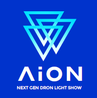

Checklist AION
Montar Centro, Antenas, Starlink etc.
Asegurar LORA y RTK
Encender equipos y conectar LAN Server, laptop y AP´s
Preparar Safety Device
Abrir configuración UNIFY 192.168.2.1
Checar canales wifi, enviroment y calidad de conexion AP´s (GBe)
Abrir página del server 192.168.2.117:8080
Iniciar RTK
Encender drones WAKE UP
Conectar USB coreos
Plan Show, crear coreo
Posicionar coreo, orientarla y definir ALTURA base
Ajustar Hard Fence
Comprobar RTK acc este fijadaa menos de un metro y poner ready los drones, checar baterias y calidad de recepcion WIFI y LORA
Checar altura de posibles obstaculos cercanos
Generar la misión ajustando la ALTURA de despegue para evitar los obstaculos y definir luz de drones durante despegue y aterrizaje
Esperar cálculo de trayectorias y carga de paths
Ajustar tiempo Pre Roll
LAUNCH COREO
Reiniciar Checklist